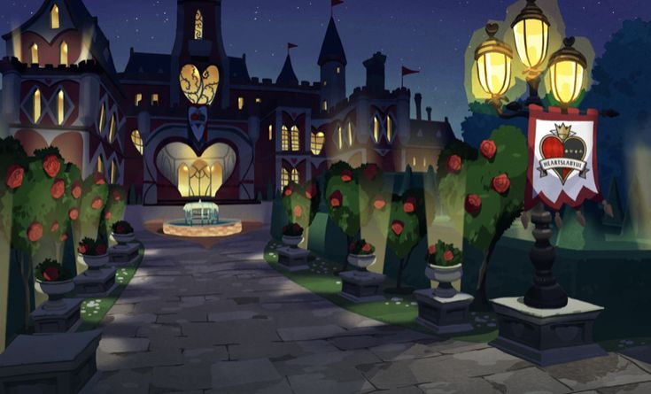

Sinopsis
Twisted Wonderland es un videojuego móvil de rol desarrollado por Aniplex y Disney. La historia sigue a un estudiante que, de forma misteriosa, es transportado a un mundo mágico inspirado en los universos de los clásicos cuentos de hadas de Disney. En este mundo, el protagonista ingresa a la Academia Night Raven, una institución educativa para jóvenes hechiceros, en donde se encuentra con personajes que están basados en los villanos y héroes más conocidos de las películas de Disney, pero con un giro único. Cada uno de los edificios de la academia está dirigido por una "casa" basada en un personaje de Disney, como los villanos de La Sirenita, La Bella y la Bestia, El Rey León, entre otros, y los estudiantes de cada casa tienen características y personalidades que reflejan sus contrapartes en las películas. A lo largo del juego, el jugador asume el rol de un estudiante que no tiene magia y debe superar diversos desafíos, tanto académicos como personales, mientras entabla relaciones con otros estudiantes y profesores. El juego combina elementos de simulación de vida escolar con batallas de cartas, en las que los jugadores deben construir estrategias con sus compañeros de clase para enfrentarse a enemigos y resolver misterios.
Dormitorios
Heartslabyul
Basado en la Reina de Corazones
Valores: Severidad
Savanaclaw
Basado en Scar
Valores: Tenacidad
.jpg)
Octavinelle
Basado en Ursula
Valores: Misericordia
.jpg)
Scarabia
Basado en Jafar
Valores: Meticulosa planificación
.jpg)
Pomefiore
Basado en la Reina Malvada
Valores: Esfuerzo
.jpg)
Ignihyde
Basado en Hades
Valores: Perseverancia
.jpg)
Diasomnia
Basado en Malefica
Valores: Elegancia
.jpg)
Ramshackle
Basado en ???
Valores:???
.jpg)